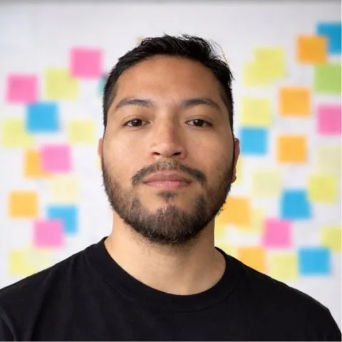
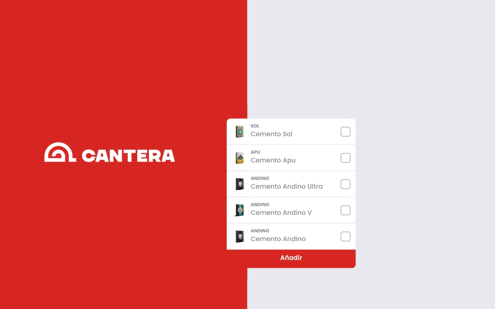
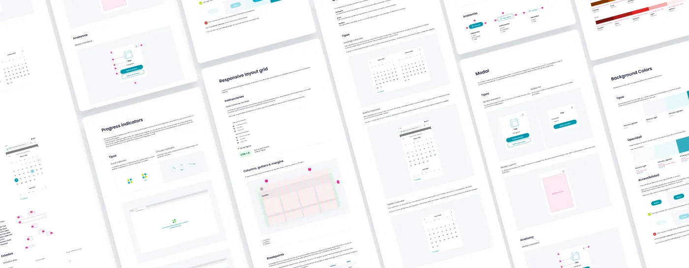
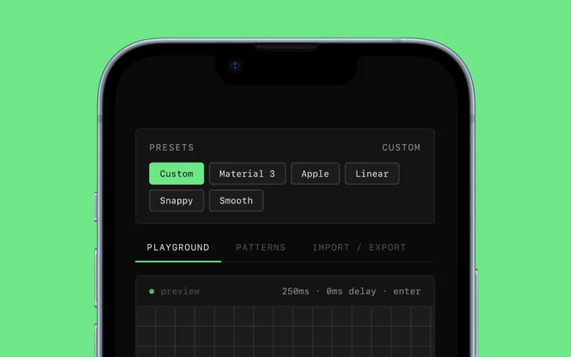

Interfacesthat move.
I'm Jordan Collao, a Design Engineer & Motion Designer from Lima. I design interfaces and the motion inside them, so products feel clear, accessible and responsive to every action.

Eight projects.
All motion.
Product UI, design systems and motion for teams in Perú, Chile and the US.
TasteMakers / Anthropic
Design prompt engineering: I turn UI structures into structured prompts so AI models can rebuild layouts accurately.
 Now
Nowactive
HidroRoots
A responsive site for a Peruvian hydroponics company, from benchmark to high-fidelity UI.
 Live
Livesite
Progresol Plus
A B2B app that connects hardware sellers with retailers across Perú, on iOS and Android.
 On the
On thestores
Unacem 360
A responsive landing for UNACEM's regional cement platform, built on trust and clear calls to action.

Cantera
Three short Lottie animations that explain the main flows of a hardware-store platform.

Lottiex3
Vitamin DS · Auna
Motion tokens, components and icons for a healthcare design system, accessible from day one.

Gawq App
Interaction and motion for a US news app: pull-to-refresh, splash screen and web transitions.

Cometa
A presentation video for a platform that connects schools and parents in México.

Now spinning Global payments
Technology collection · one of 4,540 Lottie animations
Tools I build.
In your browser.
Small experiments, free to use. No sign-up, nothing uploaded to a server.
Motion Tokens Generator
Define duration, easing and delay as design tokens and export them to Figma.

v0.2Image Compressor
Compare four quality levels side by side and keep the smallest that still looks right.
 v0.1
v0.1Luz App
Splits the electricity bill by apartment and sends each tenant their share on WhatsApp.
 v0.1
v0.1Audio Extractor
Pull MP3, WAV or OGG out of any video, right in the browser.
 v0.1
v0.1Seven teams.
Since 2018.
Perú, Chile and the US. Three of them are still on the record.
Taste Makers
Remote, USADesign Prompt Engineer, then LLM Trainer and Visual Design EvaluatorActiveGrupo UNACEM
Lima, PerúUI Designer Senior, now UI Designer SpecialistActiveCencosud S.A.
Santiago, ChileDesign System Designer, Product Designer, Sr UX/UIAuna
Lima, PerúUX Motion, Visual and UI DesignerIconScout
Remote, globalMotion and AI Visual ContributorActiveCajalab
Lima, PerúUI Designer, Motion Graphic DesignerLudik
Lima, PerúVisual Designer, Motion DesignerA designer from Perú who animates for a living. I design the interface and the motion inside it.
I'm a Senior UX/UI and Interaction Designer focused on digital products where motion supports usability: affordances, micro-interactions and system states that reduce friction. I use AI early in the process for research synthesis, ideation and concept validation, always grounded in UX principles and product constraints.